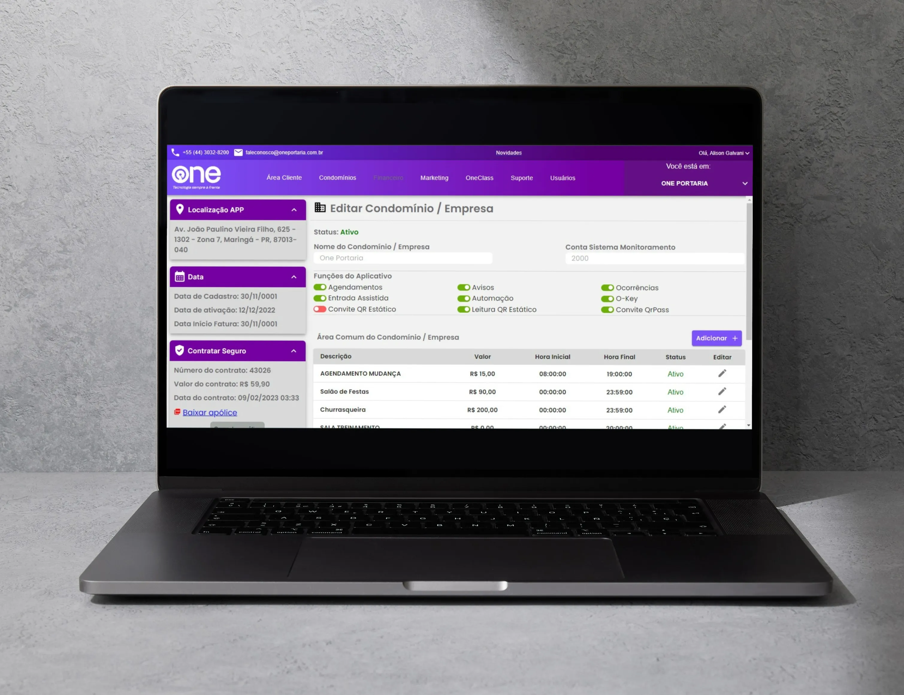
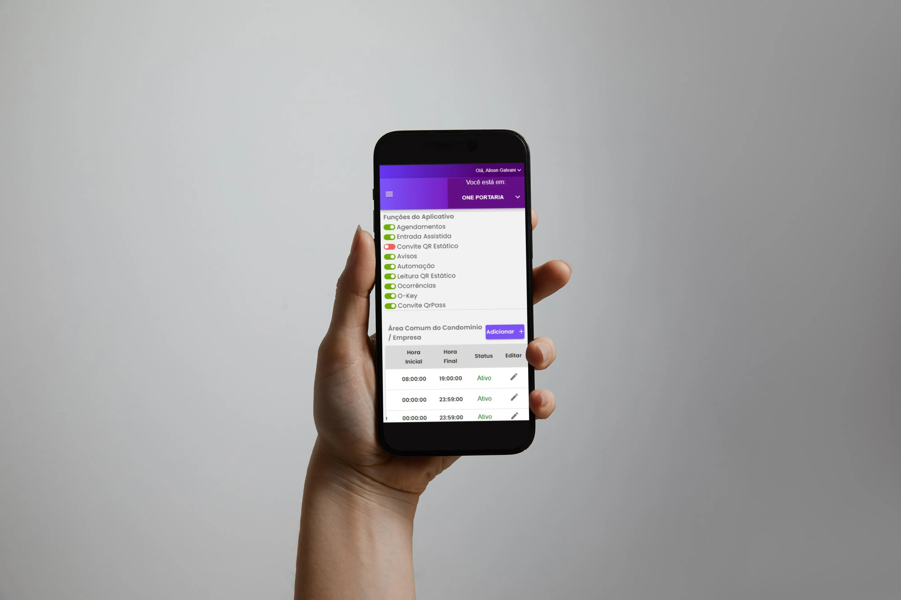

Área do cliente ONE
Simplificando e agilizando para os clientes da One Portaria
Essa plataforma é um compilado de informações e funcionalidades essenciais para os clientes que usam as soluções da one. Antes era necessário que o cliente entrasse em contato para solicitar ou alterar essas informações, e agora com a Área do cliente conseguem de forma ágil e fácil ver ou alterar essas informações.
Tecnologias
A Área do cliente One Portaria foi um projeto construído do zero, utilizando no front-end:
- React
- Axios
- Material-UI
- HTML
- CSS
- JavaScript
E no back-end:
- NodeJS
- Integração com API do sistema OMIE (financeiro)
- Integração com API de contratação de seguros MONIF
- MySQL
- Biblioteca para envio de emails em NodeJS
Minha contribuição e desafios
Fui designado para ser o lider do projeto, enfrentando o desafio de construir a plataforma do zero em 30 dias, utilizando no front-end o framework React. Porém nem eu, nem os 4 membros da equipe possuiam experiencia concreta com o framework.
Arquitetei, fiz o cronograma, tracei metas semanais, deleguei responsabilidades e conduzi a equipe para que a meta dos 30 dias fosse cumprida utilizando algumas estratégias:
- Dividindo a equipe entre front-end e back-end para que andassem em paralelo, e para que a curva de aprendizado com React fosse mais rápida.
-
Reunião todas as segundas-feiras para:
- Passar a meta da semana
- Definir e documentar com os times como seria o retorno da API para cada funcionalidade. Assim os dois times conseguiam fazer a mesma funcionalidade em paralelo, fazendo os testes de integração ao finalizarem
- Reunião todas as sexta-feiras para mostrar e alinhar as entregas da semana com o CEO, e discutir soluções de problemas
- Alinhando com os times e documentando muito bem cada funcionalidade para que não houvesse retrabalho
Obtivemos sucesso no prazo e no desafio de construir algo performático e de fácil manutenção com uma tecnologia que não dominávamos.
←Voltar ao portfólio